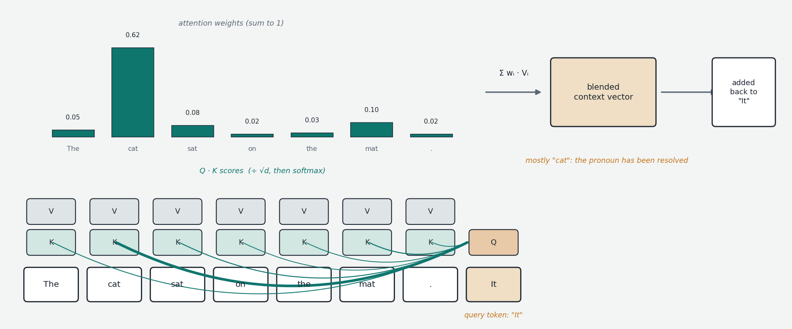
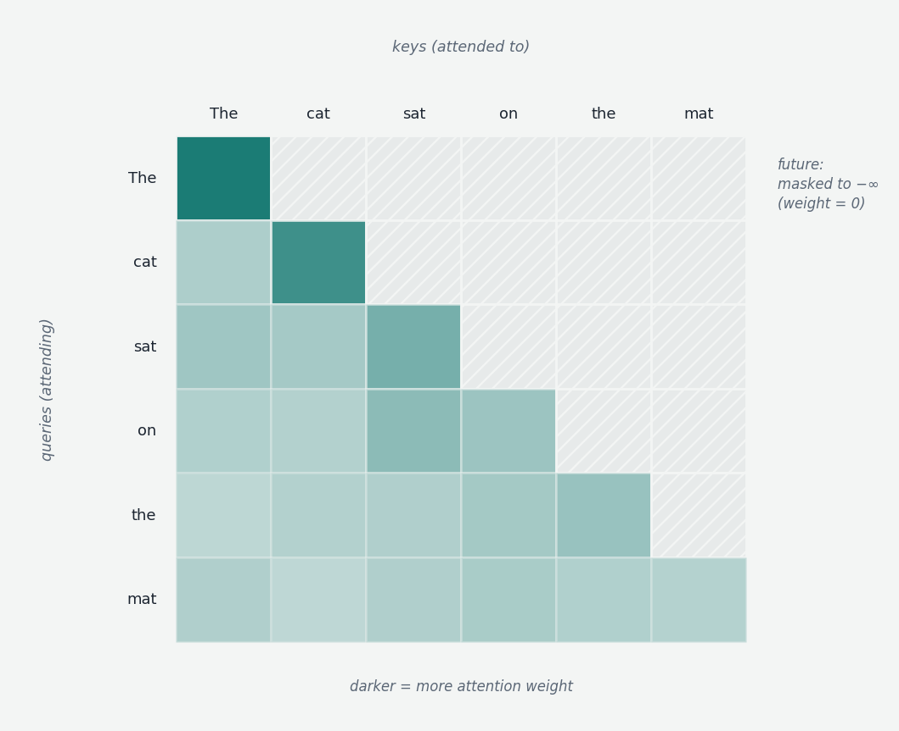

After the embedding step, every token is a vector — but the vectors are isolated from each other. The vector for "it" in "The cat sat on the mat. It purred." is exactly the same as for any other "it", because it is just row "it" of the embedding table. The model has no way yet to know that this "it" refers to a cat. What is needed is a mechanism that lets each token's vector be modified based on the other tokens — a way for tokens to look at each other and exchange information. Attention is that mechanism, and it is the only place in the transformer where information moves between positions. Everything else — the MLPs, the nonlinearities, the normalization — operates on each token's vector independently. Remove attention and you have a stack of per-token operations that could never get "cat" into "it".
The name encodes the intuition: reading "it", you implicitly look back for its referent, paying selective attention — "cat" matters; "sat", "on", "the" are background. The mechanism makes this selective looking explicit, through arithmetic: for each token, compute how much attention to pay to every previous token, then mix in their information accordingly.
Queries, keys, values
The math is built around three derived vectors computed for every token, best understood through a search metaphor. Each token presents three facets. Its query is the question it asks: what information am I looking for? For "it", something like "I'm a singular pronoun seeking a recently-mentioned noun." Its key is the advertisement it broadcasts: what kind of thing am I, available for lookup? For "cat": "singular animate noun, candidate antecedent." Its value is the payload it offers: if you find me relevant, here is what you receive — the semantic content of "cat": furry, four-legged, pet.
These three vectors are not stored anywhere; they are computed fresh by multiplying the token's current vector by three learned matrices — the query, key, and value projections, parameters of the model learned during training like everything else (they are typically somewhat smaller in dimension than the token vector itself). Nobody tells the model what questions are useful to ask or what advertisements to broadcast; useful ones emerge because they reduce prediction error.
The mechanism, step by step
Pick a position — say position 7. Take its query vector and compare it against the key vector of every position up to and including itself. The comparison is a dot product: multiply the two vectors element-wise and sum. Geometrically this measures alignment — vectors pointing in similar directions through the high-dimensional space yield a large positive number, perpendicular ones yield zero, opposed ones a large negative. The dot product of "it"'s query with "cat"'s key collapses to a single number expressing how well the question matches the advertisement.

One detail belongs here that introductory accounts (including the earlier version of this explanation) often omit: before going further, the raw scores are divided by the square root of the key vector's dimension. The reason is statistical: dot products of high-dimensional vectors naturally grow with dimension (more terms in the sum), and unscaled scores would push the next step — softmax — into a saturated regime where one position takes essentially all the weight and gradients vanish. The √d scaling keeps scores in a well-behaved range regardless of head size. This is why the operation is formally called scaled dot-product attention.
The scaled scores — one per earlier position — are passed through softmax, which converts a list of arbitrary numbers into a probability distribution: exponentiate each, divide by the sum, yielding positive numbers summing to 1, with larger scores taking disproportionately larger shares. The results are the attention weights: position 7 might distribute 62% of its attention to position 5, 18% to position 0, scraps elsewhere.
Now use the weights to mix the value vectors: multiply each earlier position's value by its attention weight and sum. The output is a custom blend of payloads, dominated by whatever the query found relevant. This blended vector is attention's contribution for position 7, and it is added into position 7's running representation (the additive part is the residual connection, treated fully in Chapter 00e). Do this for every position simultaneously — each with its own query — and one round of attention is complete: every token's vector now carries context.
The causal mask
One rule is specific to language models that generate left to right. During training, the model's job at every position is to predict the next token (Chapter 1), and letting a position attend to later positions would be peeking at the answer. So attention is causally masked: position 7 may attend to positions 0–7 only; later positions are forcibly excluded by setting their pre-softmax scores to negative infinity, which softmax maps to exactly zero weight. "Causal" means information flows only from past to future. (Other transformer uses — embeddings models, image patches in Chapter 09a — use bidirectional attention with no mask, because nothing is being predicted left-to-right.)

Multi-head attention
What is described so far is a single head. In practice every layer runs many heads in parallel — 32 to 128 in current models — each with its own learned query, key, and value matrices, hence its own notion of what to ask, advertise, and provide. The point is specialization: after training, different heads demonstrably handle different relationships — some track syntax (verbs to subjects), some coreference (pronouns to antecedents — the "it"→"cat" case), some induction patterns ("where did this sequence appear before, and what followed it?" — machinery that Chapter 9 connects to in-context learning). Each head works in a lower-dimensional subspace (the token vector's dimensions divided among the heads), and when all heads finish, their outputs are concatenated and passed through one more learned matrix — the output projection — that mixes them back into a single contribution of the original width.
Why this won
The property that made transformers displace what preceded them is the directness of connection. In recurrent architectures, information from position 3 reaching position 4,000 had to survive 3,997 sequential hand-offs, compressed and distorted at each. In attention, position 4,000 looks directly at position 3 — one dot product, and if relevance is high, the value flows straight in, undegraded by distance. This is long-range awareness, and it is also what makes training parallelizable: every position's attention can be computed simultaneously rather than waiting for a sequential scan. The price is that the comparison is all-pairs — cost growing quadratically with sequence length, and a growing memory of keys and values at inference — which is the bill that Chapter 00g (KV cache, GQA, MLA) and the frontier architectures of Chapter 10 (linear hybrids, sparse attention) exist to pay down.
The picture to keep
Each token poses a question (query); every earlier token offers an advertisement (key) and a payload (value); the question is dot-producted against every advertisement, scaled by √d, softmaxed into proportions, and the proportions blend the payloads into a single contribution folded back into the token's representation. Run it in parallel across many specialized heads, mask out the future, and you have the one mechanism through which any information ever crosses between positions — the mechanism that makes every capability involving combining context possible at all.